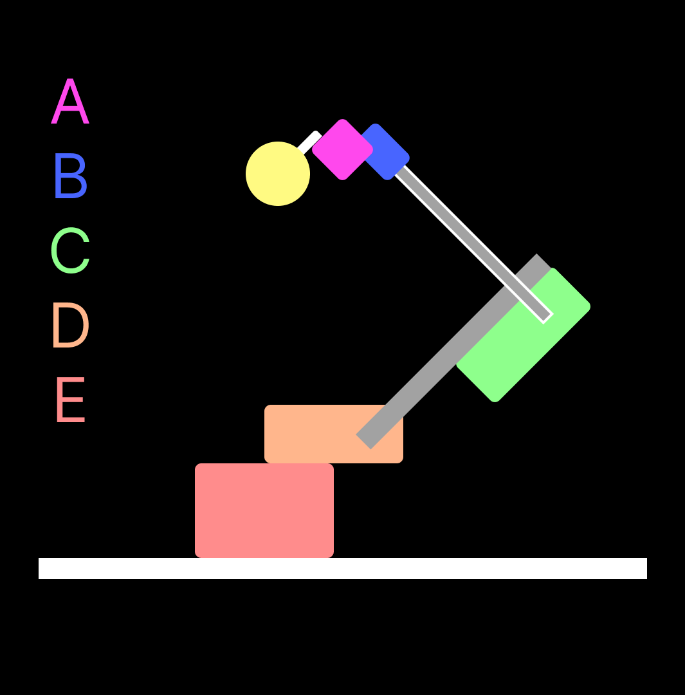
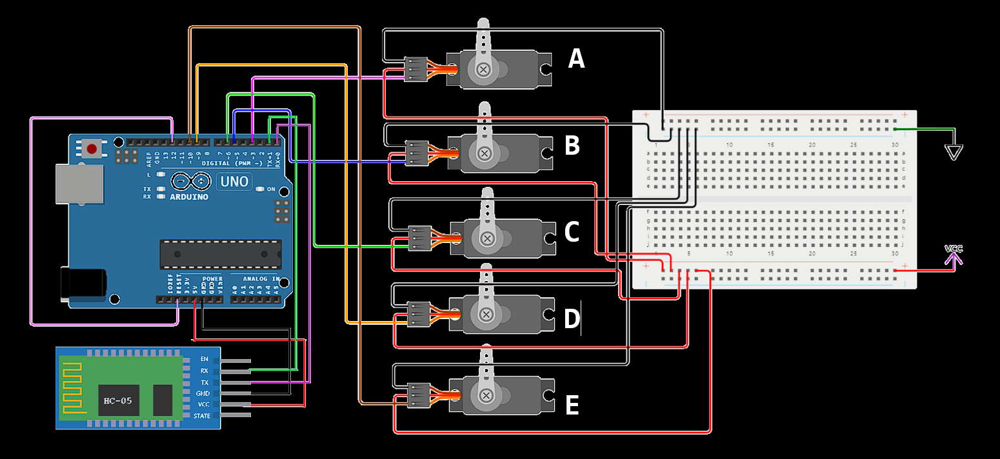

Imagine building a robotic arm that can move and grab objects. We are going to create this using an Arduino Uno, which is the brain of the robot.
We will be sending commands wirelessly via Bluetooth to the robotic arm using our Android app. This means we can control the arm using our smartphone or tablet!
By opening the app and connecting it to the robotic arm via Bluetooth, we can send specific commands to make the arm move and grab things. The arm understands these commands and follows them accordingly.
It has a wide range of potential applications like home and industrial automation, in hospitals and research and deapartment and also in other various aspects of life.
In this case a spare Power Bank has been used for powering the whole robot.
Some jumper wires were used.
And a breadboard power rail for connecting the power.
Once we get the things ready, we can start the building process.
First we will build the base of the robot, in this case we used a simple rectangular cardboard plate as the base.
We then moved on to the robot body parts.
We started with the claws of the arm. We fixed one claw to the micro servo and the other with the spindle of it
Then we attached each of the motors one by one to the limbs of the arm.
Below is a image shwing which motors are to be connected to which limb in which way. The motors A and B are the two micro Servos and the rest are high torque ones.
And finally we attached the whole arm to a high torque servo motor with the base.
Then we attached the Arduino to the base and connected the jumpers according to the Circuit Diagram.
We also made a vertical stand for the HC-05 Bluetooth Module to keep it in place.
When the Arduino gets powered up it first of all tries to set up a Serial Connection at the 9600 baudrate.
Then it aligns all of the servo motors to a certain position. So when the power is on, the limbs are aligned in a particular position
Now The arduino waits for commands from the Serial Communication.
When a Command is sent, it is analysed and understod by the arduino and it acts accordingly.
#include //in-built Servo library
#include //in-built String library
int delay_time = 30; // default delay time for motor speed
int step = 1; // delay step value for motor speed
Servo servos[5]; // array of servo joints
int pos[5]={10,60,40,90,100}; // array for holding joint servo's positions
int resetPin = 12; // resetPin connected at pin 12 of arduino
int baudRate = 9600; // default baudrate for HC-05
void setup() {
Serial.begin(baudRate); //tells the Arduino to establish a Serial connection at 9600 bps
while (Serial == 0) //run while loop as long as value of Serial is 0....value of Serial is 0 as long as Serial connection is not established..
{
;
}
Serial.println("Arduino connected at: " + String(baudRate) + " baudRate");
while (Serial.available() > 0) //checks if there is data available in the input Stream
{
Serial.read(); // clear the Serial input stream
}
Serial.flush(); // clear the Serial output stream
servos[0].attach(3);//connects the servo[0] to arduino pin 3
servos[1].attach(5);//connects the servo[0] to arduino pin 5
servos[2].attach(6);//...
servos[3].attach(9);//...
servos[4].attach(10);//...
for (int i = 0; i < 5; i++)
{
servos[i].write(pos[i]); // setitng servos to their initial position...needed for speed calculation
}
digitalWrite(resetPin, HIGH); // RESET pin configuration
pinMode(resetPin, OUTPUT);
}
void loop() {
driver(); // driver function called
delay(100); // delay of 100ms is provided after every command is performed.
}
void driver() {
String input_command = "", input_String = "";
int input_value = 0;
if (Serial.available()!=0) // checking if there is something in the Serial input stream
{
input_command = Serial.readString(); // reads the whole command from the input
input_value = (input_command.substring(1)).toInt(); // get the substring starting from index 1 to end and convert it to int
switch (input_command[0]) // the first letter of the input command is used for checking the cases.
{
case 'A':
moveServo(input_value, 0);
break;
case 'B':
moveServo(input_value, 1);
break;
case 'C':
moveServo(input_value, 2);
break;
case 'D':
moveServo(input_value, 3);
break;
case 'E':
moveServo(input_value, 4);
break;
case 'T':
delay_time = input_value;
Serial.println("Set delay to: " + String(delay_time));
break;
case 'S':
step = input_value;
Serial.println("Set step value to: " + String(step));
break;
case 'R':
Serial.println("Resetting Arduino...");
delay(1000);
digitalWrite(resetPin, LOW);
break;
case 'P':
Serial.println("Running Preprogrammed Movement...");
while (Serial.available()==0) {
moveServo(10, 4); // ROTATING
moveServo(90, 0); // OPENING CLAWS
moveServo(23, 3); // GOING DOWN
moveServo(155, 1);
moveServo(66 , 2);
moveServo(12, 0); // GRIPPING
moveServo(60, 1); // GOING UP
moveServo(75, 3);
moveServo(169, 4); // ROTATE
moveServo(23, 3); // GOING DOWN
moveServo(155, 1);
moveServo(90, 0); // RELEASING
moveServo(60, 1); // GOING UP
moveServo(75, 3);
moveServo(10, 0); // CLOSING CLAWS
}
break;
case 'M':
Serial.println("Entering Manual Mode...");
break;
default:
Serial.println("Wrong Command!");
}
}
}
void moveServo(int angle, int tag) {
if (angle < 10 || angle > 169)
{
Serial.println("Angle out of range!");
}
else
{
Serial.println("Turning joint " + String(tag) + " from " + String(pos[tag]) + " to " + String(angle) + " degree.");
if (pos[tag] > angle)
{
for (int i = pos[tag]; i >= angle; i -= step)
{
pos[tag] = i;
servos[tag].write(i);
delay(delay_time);
}
}
else if (pos[tag] < angle)
{
for (int i = pos[tag]; i <= angle; i += step)
{
pos[tag] = i;
servos[tag].write(i);
delay(delay_time);
}
}
else
{
;//single semicolon means NULL statement..or empty statement
}
}
}
Download the app here
Download
The arduino IDE was used for booting up the microcontroller.
The Official Arduino Website
The Android App was built using
MIT App Inventor
There is also a simulation for the circuit diagram of this code.
Wokwi Simulation